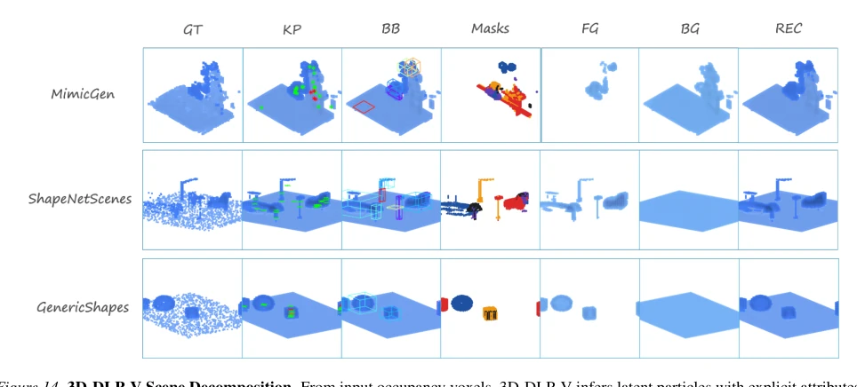
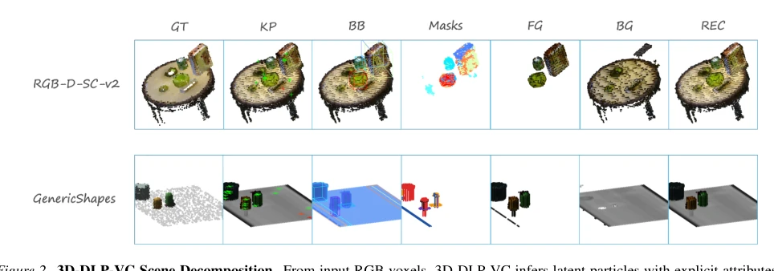
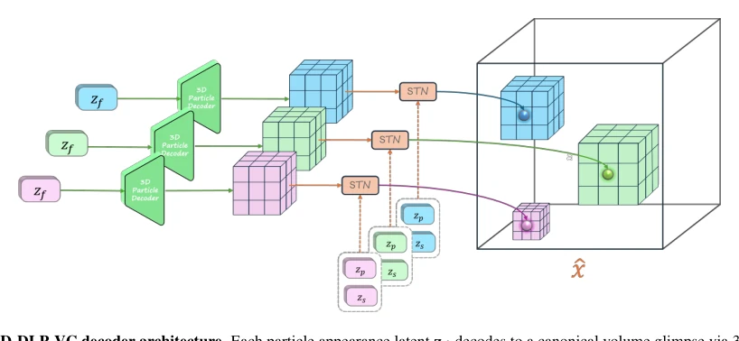
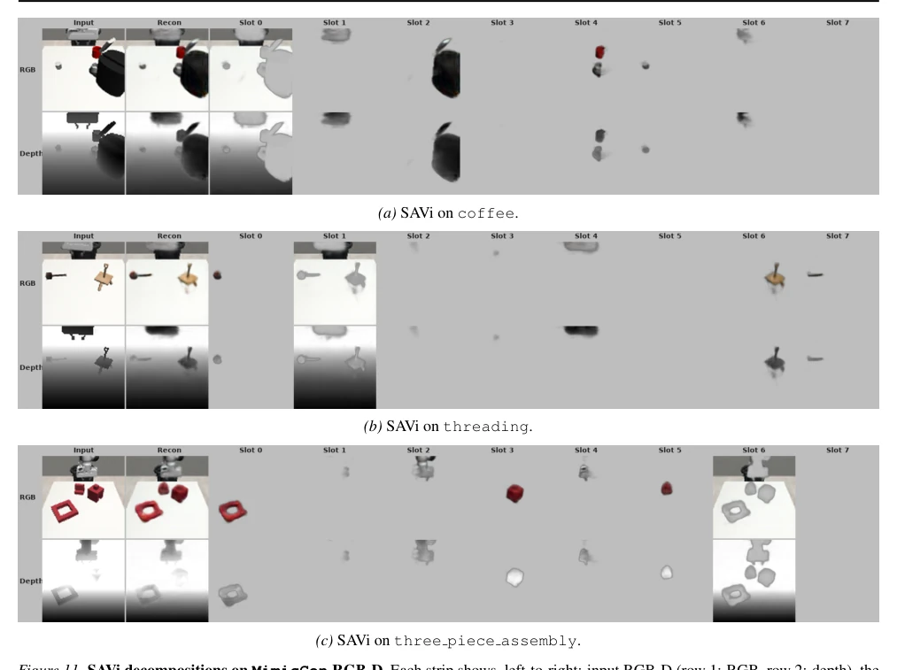
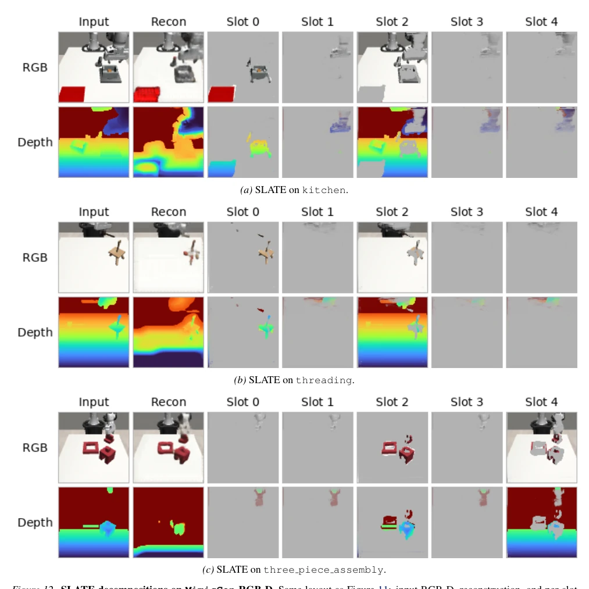
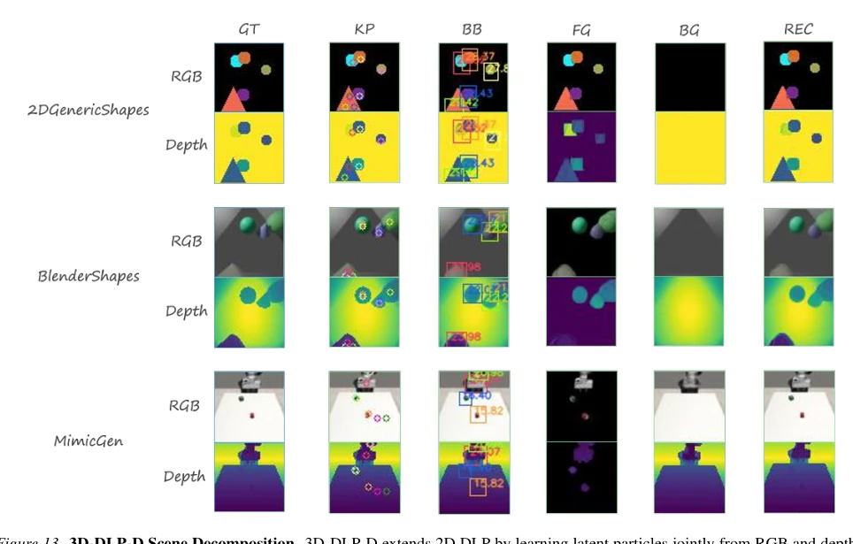
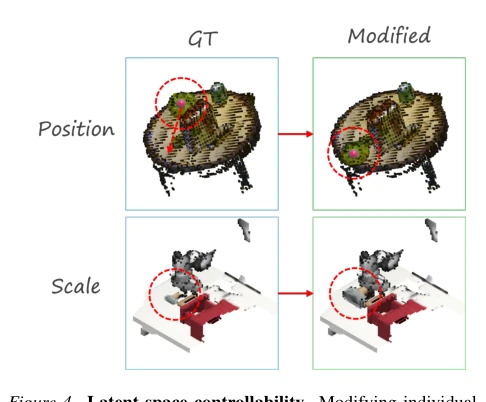
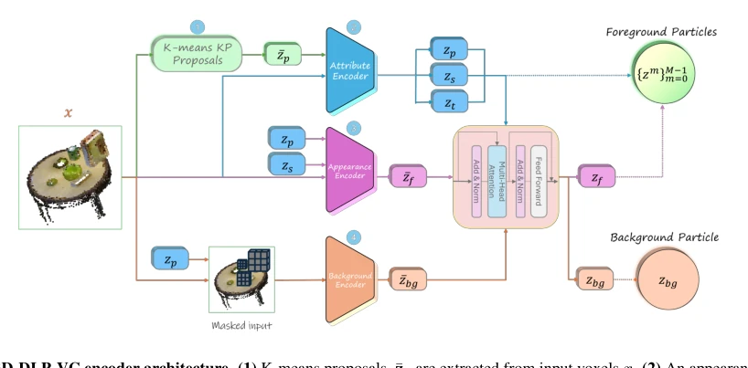

3D-DLP: Self-Supervised 3D Object-Centric Scene Representation Learning
Ellina Zhang, Madhaven Iyengar, Amir Zadeh, Chuan Li, Deepak Pathak, David Held abspdf
论文点评Review
这篇论文把 2D 的 Deep Latent Particles (DLP) 硬塞进 3D 体素空间，算是给机器人操作补上了“对象中心”的短板。作者没搞花里胡哨的神经辐射场，而是坚持用粒子重构，这点挺硬核。不过，体素化本身就是个内存吞金兽，虽然他们用了 K-means 改进关键点提议，但面对真实世界动态场景还是有点吃力。实验部分在 MimicGen 上赢了 2D 基线，但在 RLBench 上也没能全杀，说明这玩意儿对特定任务依赖挺大。总的来说，是个实用的中间态方案，离真正的通用 3D 世界模型还有距离，但作为下游策略的输入确实比直接喂体素强。
—
研究动机Motivation
机器人操作需要理解 3D 几何，但 3D 数据（RGB-D、点云、体素）通常噪声大、维度高。现有 3D 方法要么依赖密集体素（内存爆炸），要么依赖神经渲染（逆问题难解）。2D 对象中心方法（如 SPAIR, SAVi）虽好，但无法恢复遮挡区域或精确 3D 几何（Wang et al., 2022; Luo et al., 2025）。GROOT 等监督方法需要昂贵标注（Zhu et al., 2023）。现有自监督 3D 方法多基于无彩色点云或合成数据，难以直接处理真实世界的 RGB 体素，限制了实际部署。本文旨在填补空白：无需标注，直接从彩色 3D 观测（RGB 体素/RGB-D）学习可解释、可编辑的对象中心表示，以支持下游控制。
—

Figure 11. SAVi decompositions on MimicGen RGB-D. Each strip shows, left-to-right: input RGB-D (row 1: RGB, row 2: depth), the method’s reconstruction, and the individual slot reconstructions (Slot 0–7). Across all three scenes, the majority of slots are blank or carry near-uniform mass; the few populated slots either fragment a single object or mix object and background, and the overall reconstruction loses task-relevant scene entities. See Figure 12 for the corresponding SLATE decompositions.
Figure 1. 3D-DLP-VC architecture for RGB voxels. An input RGB voxel grid x is encoded into M latent particles z, each containing 3D keypoint positions, bounding-boxes (scale) and appearance features. The decoder renders per-particle foreground objects (FG), segmentation masks, and background (BG) volumes, then composites them into the final reconstruction ˆx.

Figure 2. 3D-DLP-VC Scene Decomposition. From input RGB voxels, 3D-DLP-VC infers latent particles with explicit attributes (keypoints, scales) and produces object/background masks entirely without supervision, compositing the input scene.

Figure 7. PyTorch-style implementation of voxel occupancy compositing.

Figure 8. 3D-DLP-VC encoder architecture. (1) K-means proposals ¯zp are extracted from input voxels x. (2) An appearance encoder uses STN glimpses around proposals to predict refined positions zp, scales zs, and transparencies zt. (3) A second STN extracts initial appearance features ¯zf from final particle crops. (4) In parallel, zp mask the input for background encoder to produce ¯zbg. (5) An interaction encoder processes all attributes/features to output final zf and zbg.

Figure 9. 3D-DLP-VC decoder architecture. Each particle appearance latent zf decodes to a canonical volume glimpse via 3D CNN. A 3D spatial transformer (STN) then uses spatial attributes zs and zp to scale and position the glimpse on the full-resolution canvas for the final reconstruction ˆx.

Figure 10. Core geometry used for real-world tabletop rearrangement: plane fitting via RANSAC, canonical UV frame construction, contact-point placement with clearance snapping, and collision-reject sampling with bounded retries.
Figure 3. RGB Voxel Reconstruction Comparison. 3D-DLP-VC vs. non-object-centric baselines (AE: deterministic autoencoder; VAE: variational autoencoder) on input RGB voxels across the various datasets.

Figure 4. Latent space controllability. Modifying individual particle attributes–3D position (top) and scale (bottom)–directly translates to intuitive scene changes: translation and resizing.

Figure 6. PyTorch-style implementation of the K-means prior used to obtain voxel-based keypoint proposals.